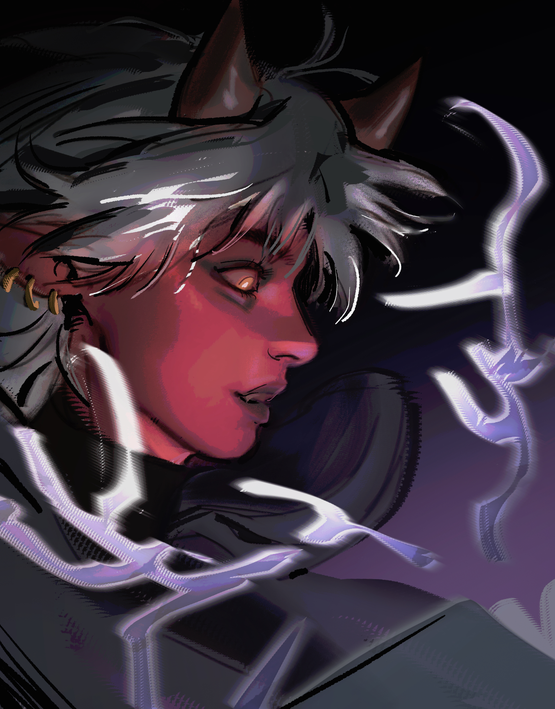

Les gros dossiers
Erleos Laan
Ambassadeur de la nation des Ténèbres

Nom est un personnage original créé pour Nom de campagne. À la table, iel occupe le rôle de rôle mécanique, mais son vrai cœur narratif repose sur thème central.
Personnalité
Ce qu’il montre
Erleos s'efforce de renvoyer une image confiante, chaleureuse et accueillante tout en restant professionel. Rarement pris au sérieux par ses pairs, il souhaite ardemment faire ses preuves.
Ce qu’il cache
Erleos a un besoin compulsif d'être apprécié par les personnes qu'il rencontre. Il a peur de la solitude, et a tendance à cacher ses doutes derrière son rôle.
Traits
- Qualités : Optimiste, doux, bienveillant, réfléchi.
- Défauts : Timide, facilement débordé, naïf, axieux.
- Quand il va mal : Mutisme, surpréparation.
Apparence
Les voyageurs d'autres nations confondent souvent Erleos avec un démon du fait de sa peau rouge faite d’écailles, ainsi que ses oreilles et sa queue pointues. Il a de courts cheveux blancs dont dépassent deux petites cornes ainsi que deux yeux jaunes brillant dans l'obscurité.
Erleos porte une large robe d’invocateur bleue ouverte, couvrant un crop top noir exposant son torse et un pantalon en tissu fin donnant dans de grosses bottes.
Fiche mécanique
Build fantasy
Explique le build comme une idée narrative : pas seulement ce qui est fort, mais ce que les mécaniques racontent du personnage.
Techniques signatures
- Technique 1 : effet mécanique + sens narratif.
- Technique 2 : effet mécanique + sens narratif.
- Technique 3 : effet mécanique + sens narratif.
Inventaire symbolique
Nom de l’objet
Utilité : ce que ça fait.
Valeur narrative : pourquoi ça compte.
Biographie
Avant la campagne
Origines.
Début de campagne
Pourquoi le personnage rejoint l’aventure.
Arcs importants
Moments clés.
Situation actuelle
Où iel en est maintenant.
Rôle dans le groupe
Fonction mécanique, émotionnelle et narrative au sein du groupe.
- Au combat : ...
- En roleplay : ...
- Dans les conflits : ...
- Ce que le groupe révèle chez ellui : ...
Relations
Nom de la relation
Lien : allié·e / rival·e / mentor / ennemi / famille.
Dynamique : résumé de la relation.
Ce que cette personne révèle : angle psychologique.
Journal de campagne
Session X — Titre
Événement majeur, conséquence, évolution du personnage.
Secrets et spoilers
Afficher les secrets du personnage
Vérités cachées, pactes, révélations futures, notes de MJ.
Thèmes
- Thème central : ...
- Contradiction : ...
- Peur : ...
- Désir : ...
- Symbole : ...
- Arc émotionnel : ...
Anecdotes
- Origine du nom.
- Moment improvisé devenu canon.
- Meilleur ou pire jet de dé.
- Détail mécanique choisi uniquement pour le drama.
Note de l’auteur
Pourquoi ce personnage existe, ce qu’il raconte, comment il a changé en étant joué, et ce qu’il représente aujourd’hui.